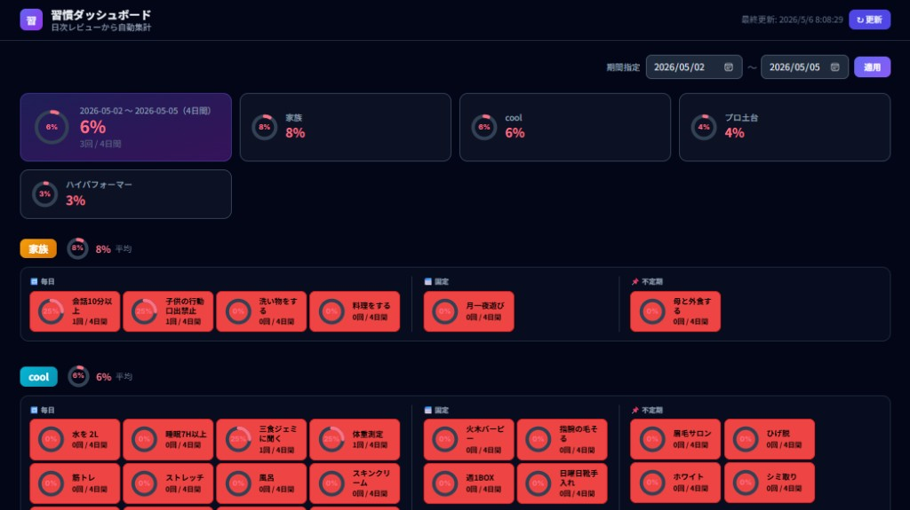
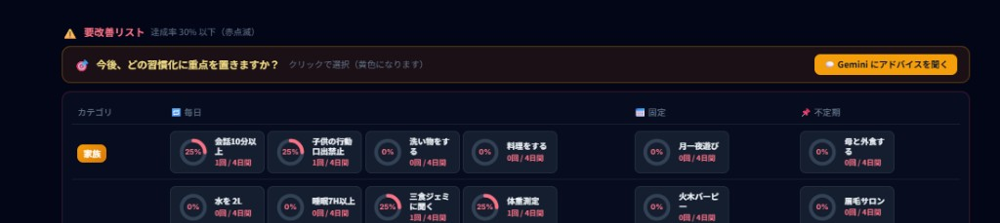

日次レビューをスプレッドシートに蓄積し、期間を選んで達成率を可視化。要改善だけを絞り込み、重点習慣を選ぶとカレンダー登録とGeminiのヒントまでつなげています。


まとめると、毎日の記録を「期間で集計」し、ダッシュボードで数字化したうえで、改善が必要な項目に視線を誘導し、重点1週間をカレンダーに落とし、必要なら生成AIに相談できる一連の動線をつなげたところが工夫の中心です。
決まった時刻に処理が走り、最新のレビュー内容を反映する起点になっています。
日々のチェック結果がクラウド上の表に蓄積され、ここが唯一のデータの置き場です。
集計・連携などのロジックはGAS側で実行し、表のデータをダッシュボード用に整えます。
ブラウザで見る自作ダッシュボードに結果を表示し、要改善の選択やカレンダー反映・Gemini呼び出しもここから行います。
ツール本体の画面では暗めの背景にし、達成率の円グラフとカテゴリ色で「どこが弱いか」を素早く掴めるようにしています。要改善リストは注意喚起の色で目立たせ、重点を選ぶ操作は色が変わるようにし、Geminiへの導線はボタンで一目で分かるようにしました（この報告ページは印刷・共有しやすい明るい配色です）。
APIの渡し方や設定の組み合わせで、何度もエラーが出てうまくつながりませんでした。
生成AIの支援でエラーログを読み解きながら、試行を細かく刻んでいくやり方が、APIまわりの突破に効きました。
処理の全体フロー（列構成や関数名レベル）は 習慣ダッシュボード_仕組み図解.html も参照してください。このページと report_assets を同じフォルダ構成のまま公開すると、画像付きでURL提出できます。